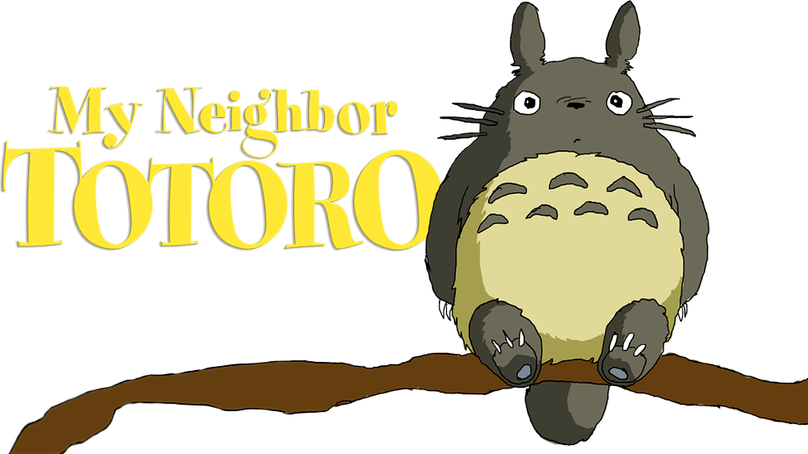

Publicada:
Película de animación japonesa de 1988.
Producida:
Escrita y dirigida por Hayao Miyazaki y producida por Studio Ghibli.
Calificaión:
8.1
Reseña:
Mi Vecino Totoro, una joya de la animación japonesa dirigida por Hayao Miyazaki, nos transporta a un mundo de fantasía y serenidad. La historia sigue a dos hermanas, Satsuki y Mei, que descubren la magia del bosque cercano a su nuevo hogar mientras lidian con la enfermedad de su madre. Con la ayuda del encantador Totoro, un espíritu del bosque, encuentran consuelo y fortaleza en la imaginación. Visualmente impresionante y emocionalmente conmovedora, esta película captura la esencia de la infancia, la naturaleza y el poder de la imaginación. Una
experiencia cinematográfica que deleita a espectadores de todas las edades y culturas.